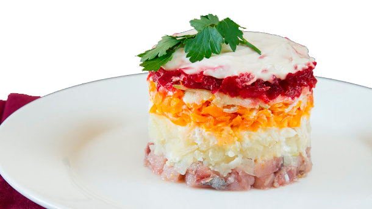

"Сельдь под шубой" — популярный в России салат из сельди и овощей. Как я прочитала во Всемирной паутине свое название салат получил из-за рецепта, согласно которому мелко нарезанное филе из сельди вместе с кольцами репчатого лука укладывается на плоское блюдо и последовательно покрывается слоями из вареного картофеля, моркови, и свеклы. После этого сверху наносится майонез. Готовый салат можно украсить зеленью и тертым вареным желтком.
Сельдь освободить от костей, порезать на куски. Картофель, морковь и свеклу отварить, остудить, очистить. Натереть на крупной терке овощи. Лук порезать кольцами. Уложить на блюдо слоями в такой последовательности: сельдь, лук, картофель, морковь, свекла, картофель, морковь, свекла, промазывая каждый слой овощей (кроме лука) майонезом. Сверху по желанию украсить зеленью и тертым вареным желтком. Поставить в холодильник на 2-3 часа для пропитки.